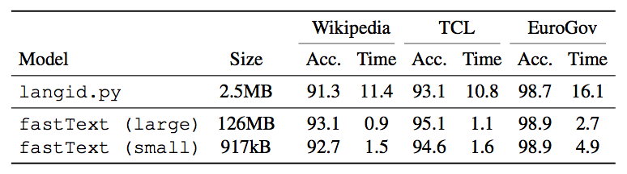

Language identification

Fast and accurate language identification using fastText
We are excited to announce that we are publishing a fast and accurate tool for text-based language identification. It can recognize more than 170 languages, takes less than 1MB of memory and can classify thousands of documents per second. It is based on fastText library and is released here as open source, free to use by everyone. We are releasing several versions of the model, each optimized for different memory usage, and compared them to the popular tool langid.py.

Our tool uses various features offered by the fastText library, such as subwords or model compression. In the remainder of this blogpost, we will explain how these work, and how to use them to build a fast and small language detector.
Training your own language detector
Building a fast and small language detector with fastText can be done with a few command lines, as we will show below. First, we need a dataset to train our model. Here, we propose to use sentences from the Tatoeba website, which can be downloaded from https://tatoeba.org/eng/downloads. Note that for the sake of simplicity, we use a small quantity of data for this blogpost . If you want to train a state-of-the-art model comparable with our pre-trained model, you will need to use a larger quantity of data.
Training data
First, let's download the training data:
>> wget http://downloads.tatoeba.org/exports/sentences.tar.bz2
>> bunzip2 sentences.tar.bz2
>> tar xvf sentences.tar
Then, we need to put our training data into fastText format, which is easily done using:
>> awk -F"\t" '{print"__label__"$2" "$3}' < sentences.csv | shuf > all.txt
We can then split our training data into training and validation sets:
>> head -n 10000 all.txt > valid.txt
>> tail -n +10001 all.txt > train.txt
First model
We can now train our first model
>> ./fasttext supervised -input train.txt -output langdetect -dim 16
and test it on the held out data:
>> ./fasttext test langdetect.bin valid.txt
This model should have an accuracy around 96.5%. Let's see if we can do better, by changing the default parameters.
Using subword features
The first way to improve our baseline model is to use subword features, which enhance the classifier by taking into account the structure of words. It uses a simple, yet effective way of incorporating such information: each word is represented by the set of all character ngrams of a given length appearing in that word. As an example, when using subwords of length 3, the word skiing is represented by
{ skiing, ski, kii, iin, ing }
A key advantage of these features is that out-of-vocabulary words, such as misspelled words, can still be represented at test time by their subwords representations. This make text classifiers much more robust, especially for problems with small training sets, or for morphologically rich languages. Users can enable these features by simply specifying the value of the minimum and maximum character ngram size with the command line options -minn and -maxn:
>> ./fasttext supervised -input train.txt -output langdetect -dim 16 -minn 2 -maxn 4
In that case, fastText now uses all the character ngrams of length 2, 3 and 4. The accuracy of the classifier should improve, and be above 98.5%. We can also make the training and testing faster, by using the hierarchical softmax:
>> ./fasttext supervised -input train.txt -output langdetect -dim 16 -minn 2 -maxn 4 -loss hs
Model compression
Finally, we can make the size of the model file much smaller, by using model compression:
>> ./fasttext quantize -input train.txt -output langdetect -qnorm -cutoff 50000 -retrain
After running this command line, you should get a new model, langdetect.ftz, with a file size smaller than 1MB (instead of 350MB for the original model).
How does model quantization work? It is quite simple, and relies on two operations: weight quantization and feature selection. We now briefly describe these two operations in detail.
Weight quantization. The first operation is to compress the weights of the models using a technique called vector quantization. Quantization is the process of mapping values from a large set (e.g. floating point numbers) to a smaller set (e.g. bytes). Here, we use a variant which is well suited to compress vectors, instead of scalar values. The algorithm, called product quantization, works as follow. First, each vector is split into smaller vectors, for example of dimension 2. Then, we run the k-means algorithm on these sub-vectors, and represent each sub-vector by the closest centroid obtained with k-means. Therefore, each 2-dimension vector is now represented by 1 byte (to store the centroid), instead of 8 bytes (to store the 2 floats), therefore achieving a compression rate of 8. If we instead split the vectors into sub-vectors of dimension 4, we can achieve a compression rate of 16 (but often with a higher distortion rate). This tradeoff between compression and distortion can be controlled using the -dsub command line option, which set the dimension of the sub-vectors.
Feature selection. The second operation we apply to compress models is to remove features which do not have a big influence on the decision of the classifier. For this, our goal is to find the model with a given number of feature (e.g. 50,000 in the previous example) which is the closest from the original model. The solution of this problem is to keep the features (either words, subwords, or ngrams), which have the vectors with the largest norms.
References
ISO codes of languages supported
af als am an ar arz as ast av az azb ba bar bcl be bg bh bn bo bpy br bs bxr ca cbk ce ceb ckb co cs cv cy da de diq dsb dty dv el eml en eo es et eu fa fi fr frr fy ga gd gl gn gom gu gv he hi hif hr hsb ht hu hy ia id ie ilo io is it ja jbo jv ka kk km kn ko krc ku kv kw ky la lb lez li lmo lo lrc lt lv mai mg mhr min mk ml mn mr mrj ms mt mwl my myv mzn nah nap nds ne new nl nn no oc or os pa pam pfl pl pms pnb ps pt qu rm ro ru rue sa sah sc scn sco sd sh si sk sl so sq sr su sv sw ta te tg th tk tl tr tt tyv ug uk ur uz vec vep vi vls vo wa war wuu xal xmf yi yo yue zh